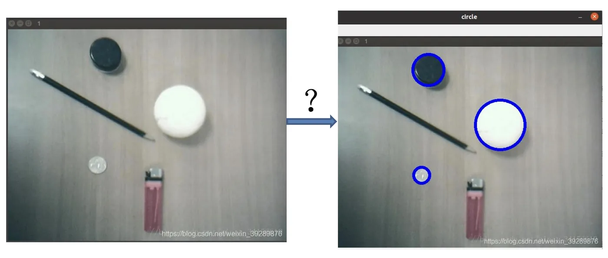
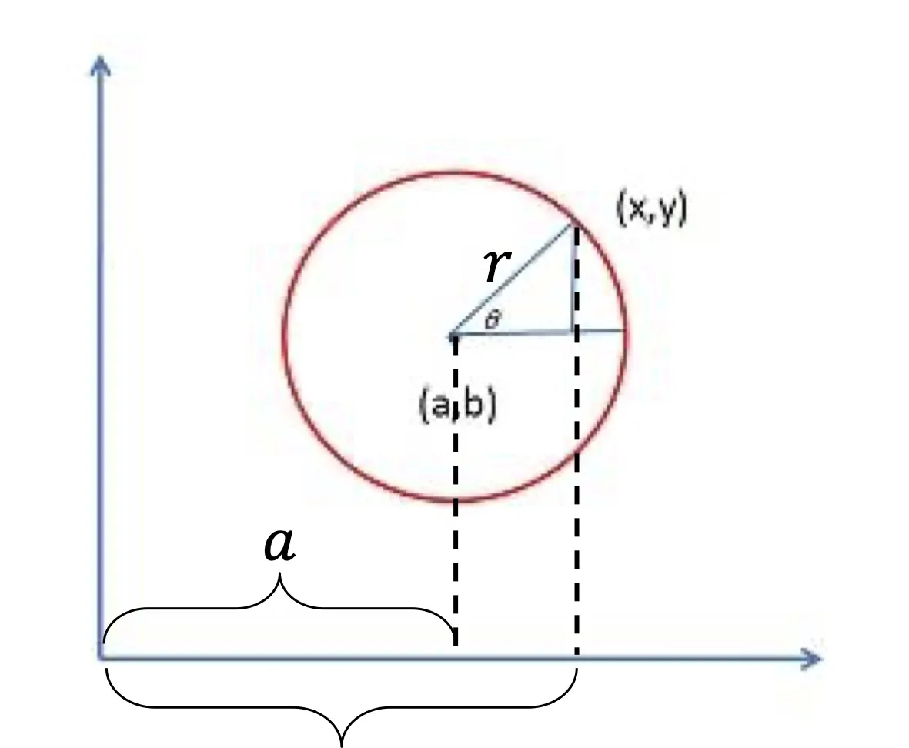
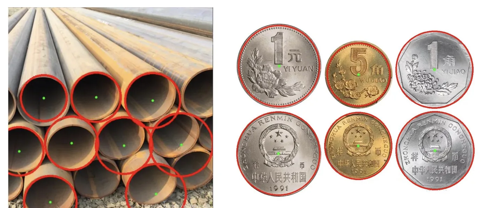

计算机视觉 · 第 3 章 边缘检测与线检测
3.4 拓展：霍夫圆检测
直线能靠投票找出来，圆行不行？这一节把霍夫变换的思路往前推一步，也是它的一个常见扩展。答案是可以，代价是多了一个参数。看明白「为什么多一个参数就要贵很多」，也就理解了霍夫变换的适用范围。
1. 圆的参数比直线多一个
既然找直线靠的是「把图形参数化，再让边缘点给参数投票」，那么直线能做的，圆自然也能做——只是参数换一组。课件正是这样把问题从直线平移到圆的。

在笛卡尔坐标系中，圆的方程是
(x − a)² + (y − b)² = r²，
其中 (a, b) 是圆心，r 是圆半径。和直线只有两个参数不同，一个圆要由三个数才能定下来。这一步的差别看着不大，但它决定了后面所有的代价。

沿用上一节的推导方式：设圆心为 (a, b)、半径为 r，圆上的点 (x, y) 可以写成
a = x − r cos θ，b = y − r sin θ，
θ 取遍一圈。也就是说，给定圆上的一个点，让 r 和 θ 自由变化，就能扫出所有可能经过它的圆。
2. 找圆 → 在参数空间找交点
在笛卡尔坐标系中经过某一点的所有圆，映射到 (a, b, r) 坐标系中就是一条三维曲线——具体说，是以这个点为顶点、沿半径 r 的方向张开的一张锥面（原课件第 22 张）；真正存在的那一个圆，会让它圆周上所有点对应的锥面都经过同一个 (a, b, r)。
把上一节的话照搬过来就是：找圆 → 在霍夫变换后的参数空间找曲线交点！思路完全一样，区别只在于参数空间从二维升到了三维。
升维带来的代价是很实在的：
- 累加器不再是二维矩阵，而是一个三维数组，要按 (a, b, r) 三个方向分格；
- 每个边缘点投出的不再是平面上的一条曲线，而是三维空间里的一张锥面，投票的格子数成倍增长；
- 内存占用和计算量都随半径的取值范围放大——这是霍夫圆检测比霍夫直线检测「贵」得多的原因，也是实际使用时必须先限定半径范围的原因。
方法本身依然是那套方法：把参数空间切格、让边缘点投票、取票数最高的格子。能这样一路推广下去，正是因为霍夫变换从头到尾只依赖「参数化 + 投票」这两件事，而与图形本身是直线还是圆无关。
3. 应用：从图像里把圆找出来
课件最后两张（原课件第 23 张、第 24 张）用一组硬币图像演示了圆检测的效果：一堆圆形物体叠放在一起，用霍夫圆检测可以把它们逐个找出来。

本节小结
- 圆的方程 (x − a)² + (y − b)² = r² 由三个参数 (a, b, r) 决定，比直线多一个。
- 经过某一点的所有圆，映射到 (a, b, r) 坐标系中是一条三维曲线（一张锥面）；找圆仍然是在参数空间里找曲线交点。
- 累加器从二维矩阵变成三维数组，投票与内存的开销都大幅上升——这是霍夫圆检测比霍夫直线检测贵的根本原因。
- 霍夫变换可以一路推广（直线、圆，乃至其他可参数化的形状），靠的就是「参数化 + 投票」这一套与形状无关的机制。